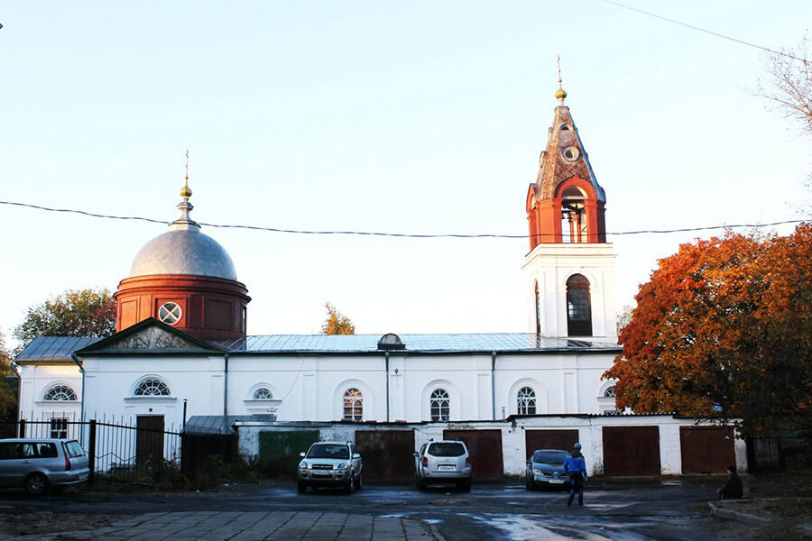

ГУСЬ-ХРУСТАЛЬНЫЙ - ГОРОД С ХРУСТАЛЬНЫМ ЗВОНОМ
Эпоха популярности хрусталя прошла, а хрусталь остался. Есть во Владимирской области небольшой провинциальный городок с населением чуть более пятидесяти тысяч жителей. Гусевчане так или иначе связаны со стеклоделием. Ведь город Гусь-Хрустальный является промышленным, и стекольная промышленность в этих местах имеет вековые корни.
Местность эта всегда славилась природными красотами. Здесь на тысячах квадратных километров меж Москвой, Владимиром и Рязанью – заповедные мещерские хвойные леса, озёра и болота. Именно на реке Гусь – левом притоке полноводной Оки – орловский купец Аким Мальцов основал хрустальную фабрику.
Некоторые историки считают, что название это образовалось при изменении финно-угорского слова «кууси», означавшего «ель» или «еловый». Река, действительно, протекает по лесистой местности, где основной хвойной породой является ель. Мещёрская низменность получила название от названия финно-угорского племени Мещёра, так что вполне вероятно и такое происхождение названия. Однако народ, не углублявшийся в изучение исторических сведений, считает, что имя городу дало название известной всем птицы.
В 1754 году Сенатом был выпущен указ о закрытии целого ряда заводов и предприятий, располагавшихся около Москвы, на 200 км вокруг. Промышленник Мальцов собрал «чемоданы», всех своих рабочих – и за два года перевёл производство подальше, открыв во Владимирской губернии новое предприятие. С этого момента начинается история Гусь-Хрустального, а вместе с тем и период бурного расцвета российского стеклоделия.
Своей всемирной славе гусевский хрусталь обязан, среди прочего, одному трагическому событию. В 1828 году владелец Гусевской хрустальной фабрики И.С. Мальцов был секретарем при русской миссии в Персии – и оказался единственным выжившим во время нападения обезумевшей толпы на группу русских дипломатов во главе с А.С. Грибоедовым.
Ради искупления вины персидский шах подарил русскому императору один из своих лучших бриллиантов, а Мальцову предоставил право беспошлинной торговли хрусталем на территории Персии. Так Гусевская фабрика приобрела обширный рынок сбыта и немалые средства на развитие производства. Помимо Персии, изделия гусевских мастеров были очень популярны в Средней Азии и Закавказье.
Уже к середине XIX века Мальцовы стали монополистами в стекольной промышленности России. Благодаря преемственности, наследованию и развитию семейного дела, хрустальный завод в Гусь-Мальцевском по количеству выпускаемой продукции занимал в стране первое место.
В 1918 году все предприятия были национализированы, а в 1931 году фабрика и возникший при ней посёлок были преобразованы в город Гусь-Хрустальный.
Хрустальный завод был и остаётся главным городским предприятием. Во время Великой Отечественной в цехах было налажено производство термосов и фляжек, термометров и прочих насущных вещей. А в послевоенные советские годы началось развитие городской среды: появились дороги, была оформлена набережная, открыты школы и дома культуры… Словом, люди жили и работали, город строился и развивался.
Георгиевский собор
Визитной карточной города является Георгиевский собор, построенный в 1892-1903 годах на средства промышленников Мальцовых по проекту архитектора и профессора Академии художеств Леонтия Николаевича Бенуа.
В 1904 году храм был освящён в честь святого Георгия Победоносца и украшен по проекту художника Виктора Михайловича Васнецова («Страшный суд» и мозаика «О тебе радуется, Благодатная», выполненная известным петербургским мастером-мозаичистом Владимиром Александровичем Фроловым, частично сохранились до настоящего времени).
После революции 1917 года службы в храме запретили и собор длительное время пустовал. С 1923 году было решено размещать в соборе государственные учреждения. В это же время с собора сняли купола. Сначала в здании Георгиевского собора разместился Дворец Труда имени Льва Троцкого
... затем кинотеатр
В 1970 году Владимиро-Суздальский музей-заповедник берет собор под опеку и с 1973 начались реставрационные работы, а в 1983 года в здании храма размещен Музей хрусталя.
Музей хрусталя
Музей хрусталя был основан в 1983 году и в настоящий момент его коллекция насчитывает более 2000 уникальных экспонатов. Здесь можно увидеть дореволюционные изделия, в свое время удостоившиеся призов на выставках в Вене, Париже и Чикаго; изделия первых советских лет – отражающие основные вехи развития страны («Пятилетка в четыре года», «Спартакиада народов СССР» и другие); современные авторские работы, среди которых выделяется «Гимн стеклу».
Парк «Сказка»
«Сказка» – это довольно густой лес, где среди деревьев можно встретить героев русских сказок и преданий, вырезанных из дерева.
Их фигуры были созданы местным мастером Валерием Киселевым, вдохнувшим новую жизнь в существовавший ранее, но пришедший в упадок и заброшенный парк.
Центральное место парка занимает живописное озеро, где можно отдохнуть в тишине и покое и зарядиться энергией живой природы.
фантастическая избушка Бабы-Яги — волшебный домик с горкой впечатляет сказочностью отделки и возвращает в детство даже взрослых.
Национальный парк «Мещера»
Гусь-Хрустальный известен не только как город хрусталя, но и тем, что здесь начинается территория Национального парка «Мещёра». Заповедник славится первозданной природой Мещёрской низменности, ее богатейшей флорой и фауной.
Он был создан в 1992 году на территории Владимирской области (юго-восток) для сохранения этого уникального природного и историко-культурного комплекса. На западе парк граничит с Московской областью, к южной стороне примыкает Национальный парк «Мещёрский» Рязанской области. Национальный парк занимает 118 900 га земель, из них 61 % предоставлены парку, а 39 % отведены под хозяйственную деятельность различным собственникам.
Сформированный в древности ландшафт парка представляет собой заболоченную, покрытую сосново-березовыми лесами равнину. Лесистость парка составляет 63%.
Мещёра – край дремучих лесов и болот, тихих рек и красивых озер, заповедный, таинственный – нашла отражение в русском фольклоре, в сказках и былинах. Соловей-разбойник, согласно преданиям, промышлял на старинном Муромском тракте, лешие населяли дремучие леса, а водяные русалки – природные водоемы.

В лесах обитает много млекопитающих (около 50 видов): куница, зубр, ласка, лось, горностай, белка, норка, кабан, бобр, заяц. Численность диких зубров составляет 70 особей, выхухолей — 500 особей.
Обитатели лесов - лоси - часто радуют местных жителей своим появлением в неожиданных местах.
Очередного лесного друга сняли на видео в Гусь-Хрустальном. Уставшее от жары животное довольно плескалось в городском озере, причем его не смущало соседство людей неподалеку. Зверя заметил местный рыбак, он же и снял видео.
Сохатый переплыл озеро, но выйти на берег сразу не рискнул – засмущался людей и некоторое время плавал вдоль берега. В итоге выбраться ему помогли вызванные очевидцами спасатели, и лось. Оказавшись на земле, сразу же скрылся в прибрежных кустах.
Сами горожане говорят, что в последнее время несколько раз встречали на дорогах около города лосей, выходивших из леса.
Некоторые утверждают, что вечерами лоси подходят к домам и заглядывают в окна. Но, естественно, в это никто не верит. Другое дело, заглятуть в автомобиль...
Гусь-Хрустальный сегодня
В городе сохранилось мало интересных архитектурно-художественных памятников, тем более что и изначально в нем их было немного. Определенный интерес представляют гражданские постройки XIX в. Самая монументальная из них — Богадельня, построеная по проекту Л.Н. Бенуа в 1897 г. В настоящее время здесь находится администрация города. Расположена напротив музея хрусталя.
Еще из интересной архитектуры: два одинаковых зеркально-симметричных здания бывшего Мужского училища, сегодня здесь расположился Гусь-Хрустальный историко-художественный музей и управление образования.
Наблюдательный турист наверняка заметит, как похожа архитектура одноэтажных кирпичных зданий в Гусь-Хрустальных. Эти домики были построены по образцу манчестерских специально для мастеров, правда, селили в них стекловаров временно, пока интерес к ним был у хозяев. А стал не нужен – выбрасывали. Даже улица специальная была – Вышвырка.
Центральная улица Гусь-Хрустального — Калинина.
В Гусь-Хрустальном неплохо обустроили набережную со стороны улицы Калинина: дорожки выложены плиточкой, установлены лавочки.
Киноцентр АлмаZ — это единственный развлекательный комплекс в городе. Есть небольшой кинозал, боулинг, детские площадки, фастфуд-кафе.
Немного дальше по улице Калинина еще один памятник градостроительства и архитектуры XIX века — Торговые ряды. Этот двухэтажный «Магазинный дом галантерейных мануфактур и съестных припасов» был построен в 1853 году при фабриках Мальцова. Здание на 20 отделений, с колоннами, галереями и балконами обслуживало рабочих гусевских фабрик. Сейчас торговые ряды также используются по назначению — здесь расположились магазины парфюмерии, косметики, салон женской одежды, нотариальные конторы и многое другое.
Торговые ряды и пристройка к ним на панораме.
Одна из церковных достопримечательностей в городе — это Свято-Троицкий храм на улице Калинина.
С приходом советской власти храм был закрыт, а его помещения стали использоваться как склад, мастерская, пункт пожарной охраны. Лишь в 1983 году Свято-Троицкая церковь была признана памятником архитектуры и началось ее активное восстановление.

Есть еще часовня Святой Варвары на Народной улице. Нынешнее каменное здание часовни было построено в 1855 году – тогда же был обустроен колодец над расположенным поблизости святым источником. Часовню возвели на месте чудесного обретения иконы Святой Варвары, ставшей затем ее главной святыней. В 1930-х годах часовня была закрыта, в ней разместился пищеблок – здесь пекли пряники и варили сироп для детских леденцов.
Интересно, что почти каждый год накануне праздника Святой Варвары в здании происходил пожар – во время одного из них были уничтожены деревянные своды. В 1970-е годы на смену пищеблоку пришел гараж, и постепенно святой источник оказался завален автомобильным мусором. Лишь после заката советской власти в 1991 году здание часовни было возвращено верующим и началось ее восстановление силами прихожан и жителей города.
Этот деревянный домик - месторасположение государственного казенного учреждения социального обслуживания Владимирской области.
ВВЕРХ